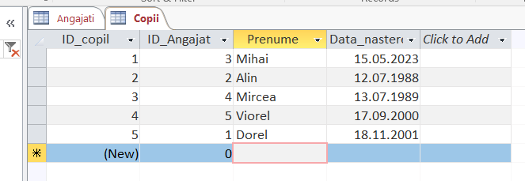

F I Ş A Nr. 2
Crearea relaţiilor între tabele.
1. Crearea relaţiilor între tabele
2. Crearea relaţiilor între tabele
- Există trei tipuri de relaţii între tabele:
- Unu-la-unu. Fiecare element din fiecare tabel apare o singură dată. De exemplu, fiecare angajat poate avea o singură mașină de firmă de utilizat.
- Unu-la-mai-mulţi. Când un element dintr-un tabel poate avea o relaţie cu mai multe elemente din alt tabel. De exemplu, fiecare comandă de achiziţie poate include mai multe produse.
- Mai mulţi-la-mai-mulţi. Când unul sau mai multe elemente dintr-un tabel pot avea o relaţie cu unul sau mai multe elemente din alt tabel. De exemplu, fiecare comandă poate avea mai multe produse şi fiecare produs poate apărea în mai multe comenzi.
Creăm o nouă bază de date goală :
pe care o denumim

Baza de date va conţine un tabel
| Câmpul ID_Angajat este cheie primară | |

 pentru a realiza
structura tabelului. În acest moment introducem numele noului tabel: COPII. Apăsăm OK
pentru a realiza
structura tabelului. În acest moment introducem numele noului tabel: COPII. Apăsăm OK
|
|
Salvăm modificările şi mergem în modul DatasheetView. Introduceţi o serie de date ca în imaginea de mai jos.
Introduceţi o serie de date ca în imaginea de mai jos.
|  |
Acum avem două tabele: |
|
Observăm că deocamdată cele două tabele sunt complet independente şi nu există nimic comun acestora. |
|
|
Pentru a stabili exact relaţia, adică pentru a specifica faptul că datele din câmpul ID_Angajat din ANGAJATI
este replicată în ID_Angajat din COPII, mergem în Selectăm ambele tabele şi apăsăm Add, apoi Close. |
|
|
Cele două tabele nu sunt încă relaţionate. |
|
Observăm că apare relaţia '1 la n' ('1 la ∞').
Câmpul ID_Angajat din tabelul
Deschidem tabelul COPII. Coloana